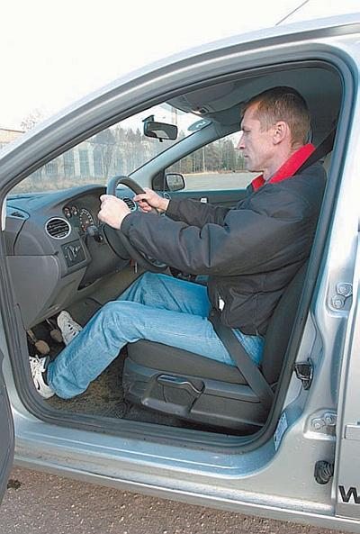
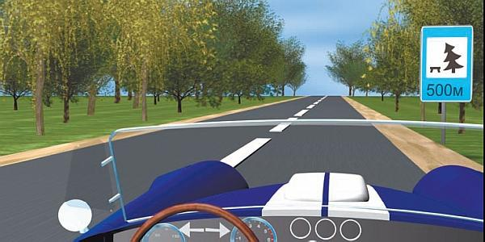

Чем опасно переутомление
Многие водители склонны недооценивать столь опасное явление, как переутомление. О том, почему нельзя допускать переутомления и как от него избавиться, поговорим в данном разделе.
Однако вначале определимся, что же понимать под утомлением. Различные специалисты определяют это понятие по-разному (кто-то связывает его только с физическими нагрузками, кто-то – только с умственными). Мы будем придерживаться следующего: утомление представляет собой естественную реакцию человеческого организма на продолжительное занятие каким-либо делом, требующим высокого внимания и концентрации.
Утомившемуся человеку становится все труднее продолжать заниматься одним и тем же делом, он напрягается все сильнее и сильнее, однако эффективность его работы заметно снижается.
Характерной особенностью процесса управления механическими транспортными средствами является то, что человек испытывает незначительную физическую нагрузку. Главная причина, из-за которой водитель может испытывать мышечное утомление, в том, что ему приходится в течение всей поездки находиться практически в одной и той же позе. Поскольку человек, управляющий автомобилем, несколько стеснен в движениях, то при длительной поездке у него ухудшается кровообращение, следовательно, ткани недостаточно снабжаются кислородом. В результате у водителя начинает «ломить» спину, у него устают шея, плечи и руки, болит поясница, «ноют» ноги.
Поэтому перед началом движения обязательно отрегулируйте водительское место под особенности своего тела. Вы должны свободно доставать ногами до педалей, руками до руля, при этом ноги и руки должны немного сгибаться соответственно в коленях и локтях. Отрегулируйте зеркала заднего вида, попробуйте поработать с органами управления при выключенном двигателе.
Учтите, что если ваше сиденье слишком выдвинуто вперед (то есть находится слишком близко к рулевому колесу), то вам придется сильно сгибать руки и ноги, что ощутимо ограничивает свободу действий и не позволяет быстро работать с органами управления.
Если же водительское сиденье находится слишком далеко от органов управления, вам придется все время подтягиваться вперед, спина из-за отсутствия постоянной опоры будет все время напряжена. Руки также будут находиться в постоянном напряжении, так как именно с помощью рук вы будете либо удерживаться на постоянном расстоянии, либо подтягиваться ближе. Все это самым негативным образом скажется не только на эффективности управления автомобилем, но и на безопасности дорожного движения в целом.
Если у водительского сиденья спинка слишком сильно отклонена назад, то в постоянном напряжении будут находиться мышцы шеи, рук, а также поясничный отдел позвоночника, что способствует быстрой утомляемости (рис. 1.12).

Рис. 1.12. Правильная поза: руки чуть согнуты в локтях, ноги свободно достают до педалей
Знайте, если не подготовить водительское место должным образом, усталость и ломоту в мышцах вы почувствуете уже вскоре после начала движения.
Однако наибольшей нагрузке во время управления транспортным средством подвергается нервная система человека. Это обусловлено тем, что водитель вынужден оперативно и безошибочно реагировать на все изменения ситуации на дороге. Такая психологическая нагрузка может стать причиной утомления – как легкого, так и сильного (вплоть до переутомления).
Кстати, переутомление и усталость – это два совершенно разных понятия, которые многие ошибочно считают тождественными. Усталость в конце рабочего дня испытывает подавляющее большинство из нас, это вполне естественно. Как правило, усталость полностью проходит после ночного сна и утром человек ощущает себя полным сил и готовым к работе.
Переутомление – это явление несколько иного рода. Оно проявляется в виде постоянного плохого настроения, неважного самочувствия, бессонницы, быстрой утомляемости даже после непродолжительного занятия какой-либо не самой сложной работой. Можно сказать, что переутомление – это накопленные остатки непрошедшей усталости. Состояние переутомления не только снижает эффективность работы, но и сильно вредит здоровью. В подобных случаях врачи рекомендуют своим пациентам срочно отправляться в отпуск.
Утомление водителя самым непосредственным образом влияет на безопасность дорожного движения. Очень часто дорожно-транспортные происшествия случаются по таким причинам, как рассеянность, невнимательность, неосторожность, недостаток водительского мастерства. Все эти причины, за исключением, наверное, последней, в большинстве случаев являются следствием утомления водителя.
Как показывают результаты проведенных исследований, утомленный водитель не только недооценивает опасность, которую может представлять дорога, но и при этом убежден в том, что он управляет транспортным средством не хуже, чем всегда. В реальности же все выглядит иначе: если вначале водитель хоть и запаздывает с выполнением тех или иных действий, но, по крайней мере, выполняет их правильно, то уже через некоторое время и сами эти действия становятся ошибочными. Реакция на изменение дорожной ситуации проявляется с заметным опозданием; дорожные знаки, разметку, сигналы светофора (регулировщика) человек замечает намного позже, нежели управляя автомобилем в нормальном состоянии. Водителю становится труднее придерживаться постоянной скорости, а также соблюдать направление движения автомобиля.
Мышцы у утомленного человека, как правило, находятся в работоспособном состоянии и вполне справляются со своей работой, однако серьезные проблемы возникают с концентрацией внимания и сосредоточенностью. Вот наиболее характерный пример: утомленный водитель заметил знак ограничения скорости, но осознать то, что требует данный знак, он уже не в состоянии и поэтому продолжает движение с прежней скоростью.
Существует еще один распространенный тип ошибок – это ошибки, возникновение которых так или иначе связано со зрительным обманом. Например, водитель может замечать на дороге объекты или препятствия, которых в реальности там нет. В большинстве случаев подобные галлюцинации возникают, когда человек борется с сонливостью или находится в «пограничном» состоянии (то есть он еще не спит, но уже и не бодрствует). При такой степени утомления водителю может показаться, что на проезжую часть неожиданно выбежал пешеход или из ближайшего поворота внезапно выехал другой автомобиль. Под влиянием подобных галлюцинаций водитель может, например, применить экстренное торможение или выехать на полосу встречного движения.
Научно доказано, что подобные зрительные обманы выполняют функции своеобразного защитного механизма. Нервная система водителя таким способом стремится убедить его прекратить движение и отдохнуть хотя бы в течение непродолжительного промежутка времени, поскольку ехать дальше в таком состоянии очень опасно. Причем пострадать может не только уставший водитель, но и другие участники дорожного движения.
Очень многие люди убеждены в том, что ни при каких обстоятельствах не заснут за рулем и всегда сумеют справиться с утомлением и сонливостью. К сожалению, статистика убедительно доказывает, что это не так. Часто водитель засыпает всего на несколько секунд, такой сон наступает внезапно. Человек даже не осознает, что его машина в течение какого-то времени была полностью неуправляемой. Иначе говоря, он не чувствует момента засыпания и последующего просыпания, ему кажется, что он все время бодрствовал и контролировал ситуацию. Зачастую водителю снится, что он по-прежнему управляет автомобилем на той же дороге и при тех же обстоятельствах.
Принято считать, что утомление водителей обусловлено продолжительным движением, причем однообразным и монотонным. Это, конечно, так, но существует еще целый ряд факторов, являющихся причинами утомляемости: это и неудобная поза водителя, и неблагоприятные погодные условия, и недостаточный отдых перед длительной поездкой, и плохое освещение дороги в темное время суток и т. д. Кстати, быстрому утомлению водителя способствует целый ряд лекарственных препаратов, которые настоятельно не рекомендуется принимать перед поездкой. Перед тем как отправиться в дорогу, не стоит и плотно наедаться, иначе очень скоро может наступить сонливость.
Все причины утомляемости можно разделить на три категории в зависимости от того, может водитель на них влиять или нет: полностью контролируемые, частично контролируемые и полностью неконтролируемые.
Например, водитель должен полностью контролировать свое состояние: нельзя садиться за руль переутомленным, в нетрезвом виде, после приема сильнодействующих лекарственных препаратов и т. п. Частично контролировать водитель может вибрацию и шум транспортного средства, что тоже является причиной утомляемости – для этого можно попытаться выбрать другой маршрут движения, а также отрегулировать двигатель или заменить прогоревший глушитель. А вот наличие таких факторов, как плохое освещение дороги в темное время суток или неудачная конструкция водительского сиденья, контролю со стороны водителя никак не поддается.
Результаты целого ряда исследований говорят о том, что вероятность возникновения дорожно-транспортного происшествия по причине усталости водителя многократно возрастает после 8 часов непрерывного нахождения за рулем, но многие водители начинают чувствовать сильную усталость уже после 2–3 часов непрерывной езды. Последнее связано с недостаточным отдыхом перед поездкой. Чтобы полностью восстановиться после сильного утомления, необходим полноценный сон в течение минимум 8 часов, но чтобы снять небольшую усталость, вполне достаточно кратковременного сна (в пределах получаса).
Сильное утомление у водителей вызывает ночное вождение. В определенной степени это обусловлено тем, что вождение автомобиля ночью нарушает устоявшийся жизненный ритм бодрствования – сна, поэтому отклонение от этого ритма, да еще сопряженное с нелегким процессом управления транспортным средством приводит к быстрой утомляемости.
ПРИМЕЧАНИЕ
Среднестатистический человек достигает своей наибольшей работоспособности в промежутки времени с 8 до 12 и с 14 до 17 часов.
При ночном вождении водитель вынужден одновременно управлять автомобилем и бороться с постоянно накатывающейся сонливостью. Особенно трудно преодолевать желание поспать водителям старше 45 лет (по статистике они ночью попадают в аварии в два раза чаще, чем днем). Главной причиной такого положения дел является то, что с годами у человека ухудшаются психофизиологические функции, которые имеют большое значение при управлении механическим транспортным средством. При этом компенсировать эти функции невозможно даже солидным водительским опытом, который к этому возрасту имеется у большинства водителей.
Относительно быстро наступает утомление и при длительном монотонном движении, например по загородной трассе. Этому во многом способствует ложное впечатление о легкости управления автомобилем на подобных дорогах. Однообразное движение, при котором водителю очень редко приходится реагировать на те либо иные раздражители (повороты, встречные машины), может спровоцировать нарушение деятельности коры головного мозга. В конечном итоге водитель может впасть в состояние своеобразного гипноза, которое по многим признакам очень напоминает переутомление. Многие водители, чтобы «встряхнуться» и заставить себя выйти из этого состояния, специально увеличивают скорость, параллельно решая и другую задачу – как можно быстрее приехать к месту назначения.
Особо опасным является принятие спиртного для того, чтобы снять накопившуюся усталость. Помимо того что само по себе управление автомобилем в состоянии опьянения является грубейшим нарушением Правил дорожного движения и смертельно опасно, решить проблему усталости таким способом все равно не получится. Поначалу, правда, может наступить некоторое облегчение, но уже через короткий промежуток времени утомление усиливается многократно и бороться с ним будет уже невозможно.
Для каждого водителя чрезвычайно важно вовремя понять, что у него наступило состояние утомления. Не стоит заниматься самообманом, пытаясь убедить себя в том, что никакой усталости нет и можно продолжать движение – это может привести к трагическим последствиям. Как правило, водители не замечают усталости до тех пор, пока она не станет довольно сильной, но качество управления автомобилем заметно ухудшается уже при первых ее симптомах.
Все время нужно помнить золотое правило автомобилистов: устал – отдохни! Если на вас накатывается усталость, не мешкая выберите подходящее место, остановитесь и отдохните (рис. 1.13).

Рис. 1.13. Через 500 метров можно остановиться и отдохнуть
Специалисты различают три степени водительского утомления. Легкая степень проявляется в виде зевоты и тяжести век. При средней степени возникает резь в глазах, сухость во рту, могут появляться какие-то фантазии, по телу может проходить теплая волна и создается ложное впечатление того, что другие автомобили движутся с очень малой скоростью. При сильной степени утомления голова склоняется вперед, руки сползают с руля, в глазах рябит, водитель потеет и ему кажется, что все это происходит не с ним.
Чтобы избавиться от легкого утомления, бывает достаточно умыться холодной водой, либо немного отдохнуть, либо выпить крепкого чаю. От среднего или сильного утомления помогает только сон.
Если у вас планируется дальняя поездка, перед тем как выехать поспите не менее 7 часов и не принимайте успокоительного. В дороге время от времени обязательно отдыхайте (нужно остановиться, выйти из машины, сделать пару-тройку гимнастических упражнений).